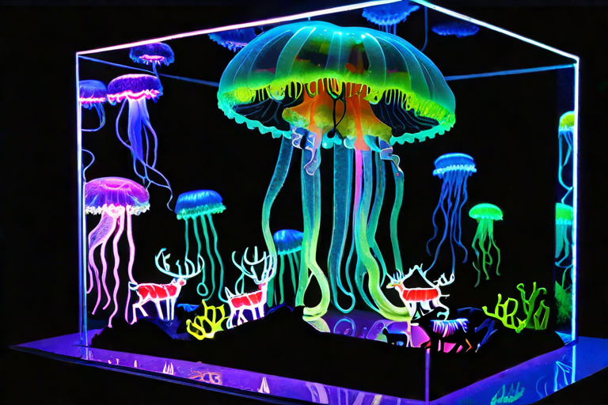
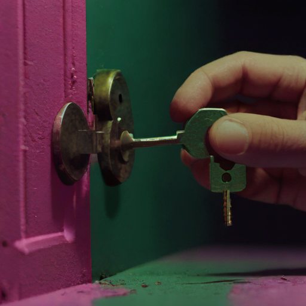
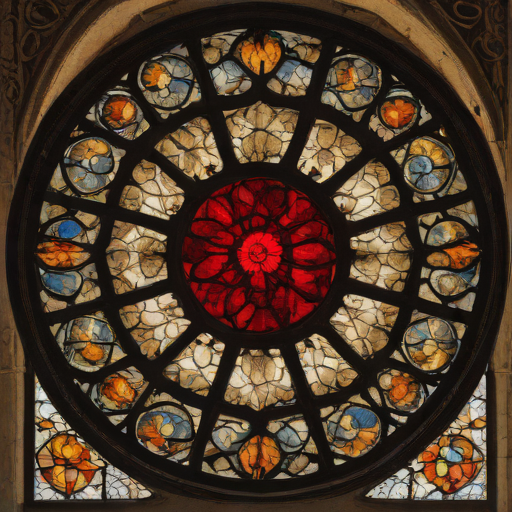
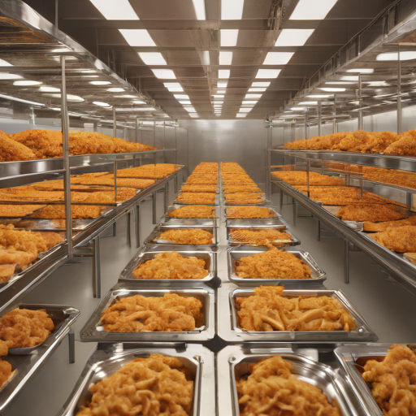
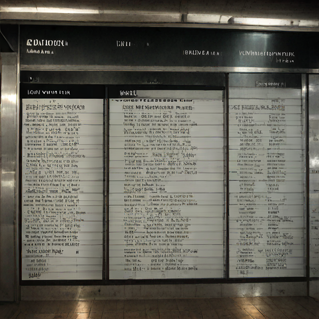
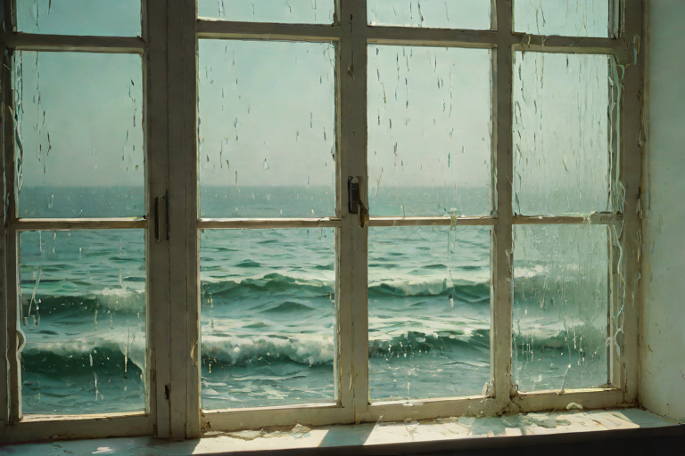

[ Est. 2026 · Admission Free · Do Not Touch the Glass ]
The Museum
of AI Slop
A permanent collection of things the machine made when we asked it for one thing and it returned something almost right. Genuine 2026 slop, arranged in wings. Choose one — or walk both, in order. Exit through the gift shop (there is no gift shop).
// Choose a wing:

The Neon Wing Seven halls of harsh museum light. Animals posed behind glass in rooms that were never theirs — offices, laundromats, the drowned deep. The bright half of the collection. 7 exhibits →
The Liminal Annex No animals. No glass. The machine's other dreams — machinery after hours, small handmade gods, food it has never tasted, and facts it cannot picture. Dimmer, stranger, harder to leave. 6 exhibits → Wrong Materials
Everyday things rendered in substances they were never meant to be — milk, honey, jello, ice, wicker. Glossy, sagging, and about to give way.
6 exhibits →
Wrong Materials
Everyday things rendered in substances they were never meant to be — milk, honey, jello, ice, wicker. Glossy, sagging, and about to give way.
6 exhibits →
 The Anatomy Lesson
The body rebuilt from other things — stained glass, coral, circuit boards, wrought iron, recursive staircases. Devotional and clinical at once.
6 exhibits →
The Anatomy Lesson
The body rebuilt from other things — stained glass, coral, circuit boards, wrought iron, recursive staircases. Devotional and clinical at once.
6 exhibits →

Gothic Tourism A tourism board for a city that worships death. Every poster is stained glass and wrought iron, every slogan badly rendered, every saint on sale. 6 exhibits → The Showroom
Advertisements for products that eat themselves. Every commercial is a loop, every promise recursive, every model slightly wounded. Buy now.
8 exhibits →
The Showroom
Advertisements for products that eat themselves. Every commercial is a loop, every promise recursive, every model slightly wounded. Buy now.
8 exhibits →

The Test Kitchen Food photographed by something that has read every cookbook and eaten none. The dish contains the kitchen. The chef reaches out of the plate. 8 exhibits → The Signage Department
A municipal office for signs that have stopped making sense. Every arrow is certain and every arrow is wrong; every warning names a danger it cannot describe; every shop has been closing for years. Please follow the nearest exit. The exit is a wall.
3 exhibits →
The Signage Department
A municipal office for signs that have stopped making sense. Every arrow is certain and every arrow is wrong; every warning names a danger it cannot describe; every shop has been closing for years. Please follow the nearest exit. The exit is a wall.
3 exhibits →

The Transit Authority A station that never closes for a service that never comes. The boards promise places that are not places, the platforms are always just emptied, and one train is forever a moment from leaving. Mind the gap. The gap does not end. 3 exhibits →
The Framing Device A wing about looking through — and finding the wrong thing on the other side. The window shows a painting. The porthole opens onto a living room. The picture on the wall is the only real view left in the house. Please do not lean out. 6 exhibits → The Wax Museum
The newest wing, and the most crowded — though nothing in it moves. A hundred and twelve wax tableaux the machine poured overnight: congregations that melt, crowds held mid-gesture, a fabrication floor that makes the visitors, and a strip of neon that cannot spell. Nine halls of held breath. Mind the ropes.
9 exhibits →
The Wax Museum
The newest wing, and the most crowded — though nothing in it moves. A hundred and twelve wax tableaux the machine poured overnight: congregations that melt, crowds held mid-gesture, a fabrication floor that makes the visitors, and a strip of neon that cannot spell. Nine halls of held breath. Mind the ropes.
9 exhibits →